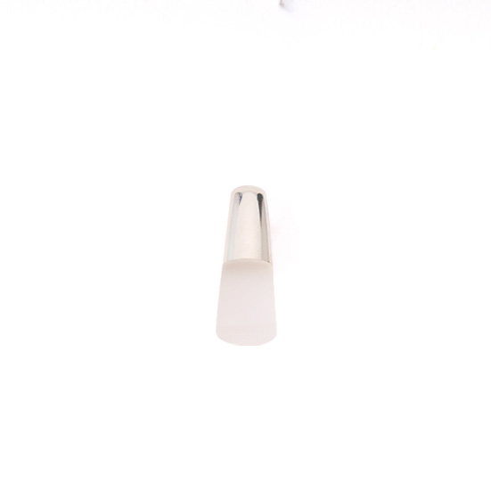
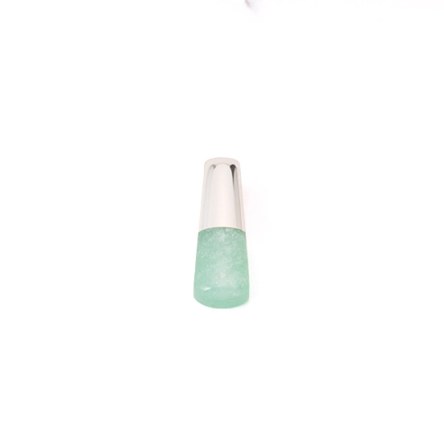
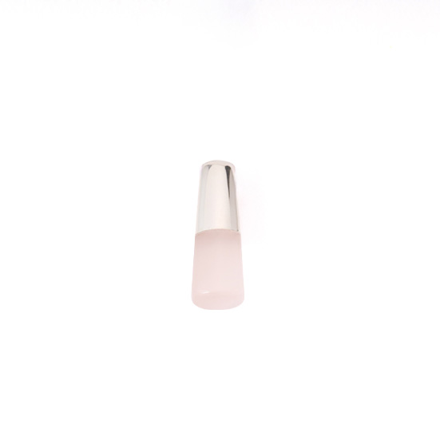
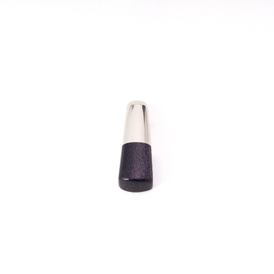
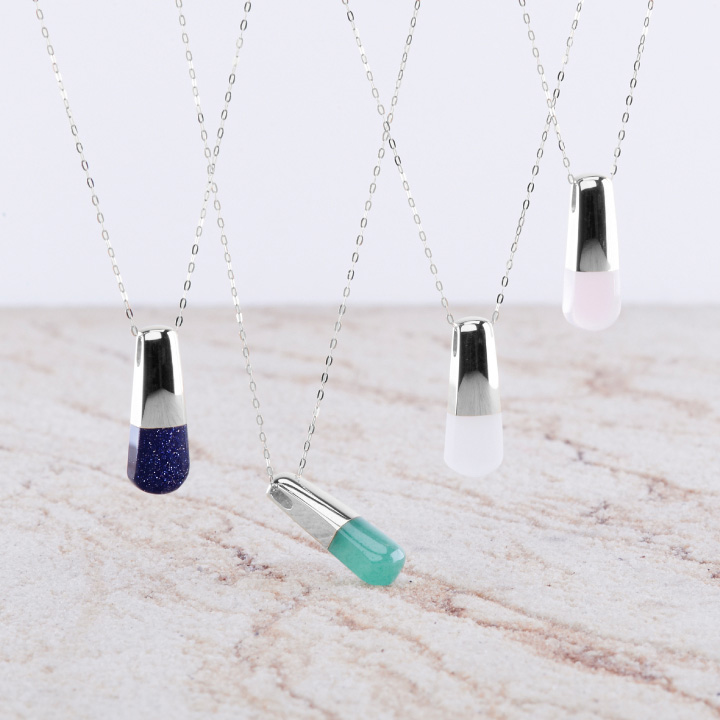
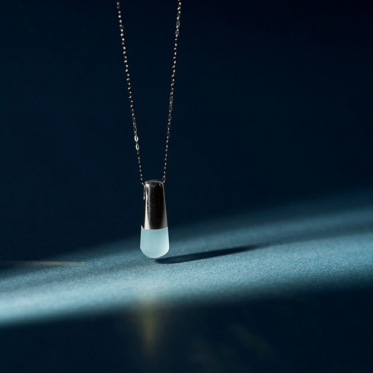
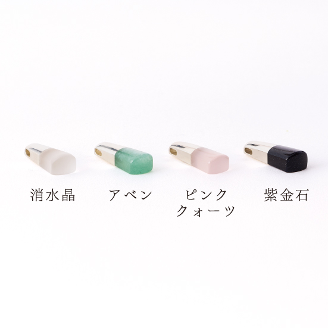

Do
間、個人化への導線
暮らしに間を置く道具を知り、買える場所へ行く。
Home › Do › 祈りの道具屋 まなか › 星のおくりもの シルバー




color: 消水晶（ペンダントトップ） / アベン（ペンダントトップ） / ピンククォーツ（ペンダントトップ） / 紫金石（ペンダントトップ）
-
消水晶（ペンダントトップ）
¥46,200 税込
-
アベン（ペンダントトップ）
¥46,200 税込
-
ピンククォーツ（ペンダントトップ）
¥46,200 税込
-
紫金石（ペンダントトップ）
¥46,200 税込
商品説明
いつも一緒のご遺骨ペンダント
大切な人とこれからもずっと一緒に。大切な人が存在した証を身に着けて、日々を暮らす。その願いを叶える遺骨ペンダントです。
「『星牌 石』を身に着けたい、いつも持っていたい」その想いのために、『星牌 石』と同じ石で、ご遺骨のペンダントを作りました。
ペンダントを手で優しく包みこむと、大切な人がそっとそばにいてくれるのを感じることでしょう。

ご遺骨ペンダントとしての普遍性と個別性
デザインする上で、大切にしたことは普遍性と個別性です。年齢や性別、洋服を選ばず、毎日身に着けたくなる、誰にでも馴染む、飽きのこない世界観を追求しました。また、あの人をそばで感じてもらうために、世界に一つだけを形にしました。
お位牌の『星牌 石』と同じ天然石を使用し、『星牌 石』をすでにお祀りされている方にとっては『星牌 石』と繋がっているようなデザインにしています。
愛おしさを感じるフォルム
普遍性の高いシルバーと個別性が魅力の天然石を4種類ご用意しました。ペンダントトップは、つい触れたくなるような愛おしさを追求し、今のフォルムに辿り着きました。温度をまとった優しい形ながらもシンプルで現代的な飽きのこないデザインです。

確かな技との巡り合わせ
山梨県甲府市の詫間宝石彫刻が開発した独自技術、「同摺（どうずり）」という技術を使って、異素材のシルバーと天然石が一体になるようシームレスに繋げています。この技との出会いが、『星のおくりもの』を類のない遺骨ペンダントへと昇華させてくれました。

甲府で、石を磨く人たち
【詫間宝石彫刻 takuma studio】
水晶の産地、甲府。
詫間宝石彫刻は、研磨から彫刻、金属加工までを自社の工房で手がける、兄弟の工房です。
世界中から集めた原石の、気泡やサビさえも、その石だけの個性として活かす。
その技と発想を求めて、デザイナーやブランドからのオファーが絶えません。
冷たい印象になりがちな天然石に、あたたかみを宿す。
それが、詫間兄弟の石づくりです。

商品仕様
サイズ
ペンダントトップ：幅0.85cm×奥行0.6cm×高さ2.55cm(チェーン開口部分：0.15cm×0.4cm・入れ口：直径約0.25cm・内寸：奥行0.45約cm）
ペンダントチェーン：長さ50cｍ（アジャスター付き）
素材・仕上げ
ペンダントトップ：天然石、シルバー（同摺）
生産地
石部分：山梨県甲府市
カラー
紫金石
消水晶
アベン
ピンククォーツ
付属品
専用接着剤、専用ドライバー
その他
※受注生産となりますので、お届けまで約2か月ほど頂戴いたします。
※こちらの商品はペンダントトップのみの販売となります。
専用台座付き商品はこちらから
チェーンとセットでのご用意も可能ですので、ご希望の方は、お問い合わせください。
・価格：57,200円（税込）
・チェーンスペック
サイズ：長さ50cｍ（アジャスター付き）
素材・仕上げ：シルバー (ロジウムメッキ仕上げ)